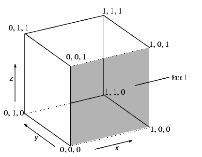
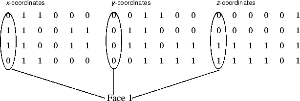
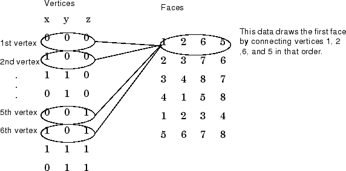
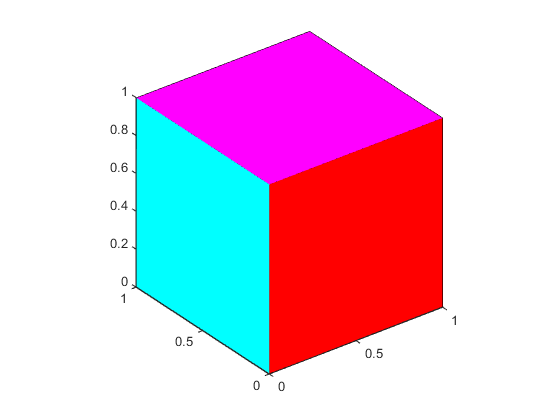
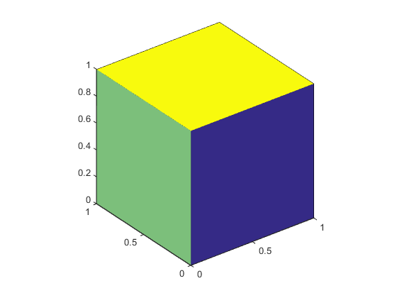
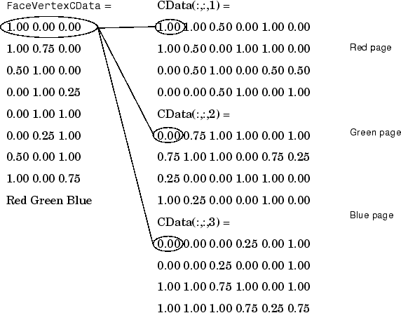

Multifaceted Patches
Example — Defining a Cube
A cube is defined by eight vertices that form six sides. This illustration shows the x-, y-, and z-coordinates of the vertices defining a cube in which the sides are one unit in length.
If you specify the x-, y-, and z-coordinate arguments as vectors, they render as a single polygon with points connected in sequence. If the arguments are matrices, MATLAB® draws one polygon per column, producing a single patch with multiple faces. These faces need not be connected and can be self-intersecting.
Alternatively, you can specify the coordinates of each unique vertex and the order in which to connect them to form the faces. The examples in this section illustrate both techniques.

Specifying X, Y, and Z Coordinates
Each of the six faces has four vertices. Because you do not need to close each polygon (i.e., the first and last vertices do not need to be the same), you can define this cube using a 4-by-6 matrix for each of the x-, y-, and z-coordinates.

Each column of the matrices specifies a different face. While there
are only eight vertices, you must specify 24 vertices to define all
six faces. Since each face shares vertices with four other faces, you
can define the patch more efficiently by defining each vertex only
once and then specifying the order in which to connect these vertices
to form each face. The patch Vertices and
Faces properties define patches in just this
way.
Specifying Faces and Vertices
These matrices specify the cube using
Vertices and Faces.

Using the vertices/faces technique can save a considerable amount of
computer memory when patches contain a large number of faces. This
technique requires the formal patch function
syntax, which entails assigning values to the
Vertices and Faces
properties explicitly. For example,
patch('Vertices',vertex_matrix,'Faces',faces_matrix)
Because the high-level syntax does not automatically assign face or edge colors, you must set the appropriate properties to produce patches with colors other than the default white face color and black edge color.
Flat Face Color
Flat face color is the result of specifying one color per face. For
example, using the vertices/faces technique and the
FaceVertexCData property to define color,
this statement specifies one color per face and sets the
FaceColor property to
flat.
vert = [0 0 0;1 0 0;1 1 0;0 1 0;0 0 1;1 0 1;1 1 1;0 1 1];
fac = [1 2 6 5;2 3 7 6;3 4 8 7;4 1 5 8;1 2 3 4;5 6 7 8];
patch('Vertices',vert,'Faces',fac,...
'FaceVertexCData',hsv(6),'FaceColor','flat')
Adjust the axes:
view(3) axis vis3d
Because truecolor specified with the
FaceVertexCData property has the same format
as a MATLAB colormap (i.e., an n-by-3 array of RGB values), this
example uses the hsv colormap to generate the six
colors required for flat shading.

To map face colors to the current colormap, assign an n-by-1 array to
the FaceVertexCData property:
patch('Vertices',vert,'Faces',fac,...
'FaceVertexCData',(1:6)','FaceColor','flat')Adjust the axes:
view(3) axis vis3d

Interpolated Face Color
Interpolated face color means the vertex colors of each face define a
transition of color from one vertex to the next. To interpolate the
colors between vertices, you must specify a color for each vertex and
set the FaceColor property to
interp.
patch('Vertices',vert,'Faces',fac,...
'FaceVertexCData',hsv(8),'FaceColor','interp')
Adjust the axes:
view(3) axis vis3d
produces a cube with each face colored by interpolating the vertex colors.

To specify the same coloring using the x, y, z, c technique, c must be an m-by-n-by-3 array, where the dimensions of x, y, and z are m-by-n.
This diagram shows the correspondence between the FaceVertexCData and
CData properties.

How Patch Data Relates to a Colormap discusses coloring techniques in more detail.